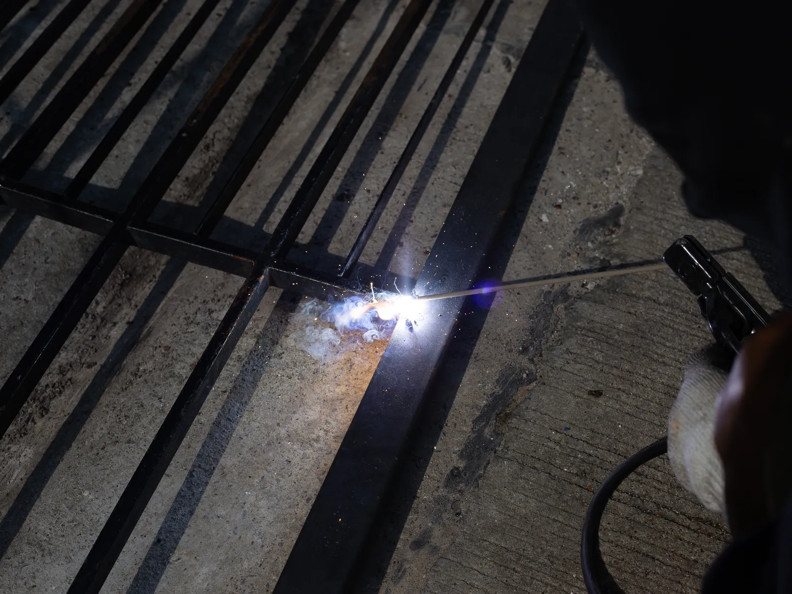

Home · Mobile Welding · Gate Welding
Gate Welding Service in New Orleans
At Big Easy Mobile Welders, we repair and build welded gates for homes and businesses across New Orleans. Our licensed, insured welders fix frames, hinges and latches on site, and the materials are covered in your quote.

We come to the jobWhat Is Included When We Handle Gate Welding in New Orleans?
Gate welding in New Orleans with us includes a free estimate, a welder who brings every material and tool the job needs with no charge beyond the quote, the right process for your gate metal, careful work on frames, hinges and latches, and a final check that the gate opens, closes and latches properly.
A Quote That Covers Materials
We supply the material and tools for your gate with no extra charge over the estimated cost. You see the price before any welding starts.
Frame Repairs
Cracked corners, broken pickets and bent rails are straightened or replaced and welded solid.
Hinges and Hinge Posts
We weld on new hinges, repair broken hinge mounts and strengthen the posts that carry the weight of the gate.
Latches and Hardware
A latch only works when the gate lines up with it, so we set latch brackets and stops where they meet cleanly.
Custom Gate Fabrication
We can customize a gate to your exact requirements, from its size and style to a design that matches your fence.
A Final Swing Test
Before we pack up, we open and close the gate with you and make sure it moves and latches the way it should.

What Types of Gates Need Gate Welding in New Orleans?
The four common gate types that need welding in New Orleans are swing gates in single or double configurations, sliding gates that run along a track, cantilever gates that roll open without touching the ground across the opening, and slide and overlap gates for high-security sites. Each type puts different loads on its frame and hardware.
Swing Gates
Swing gates come as a single leaf or a double pair and hang from hinges on posts set firmly in concrete footings. The weight of each leaf pulls hardest on the top hinge, so the frame and hinge welds have to be solid.
Sliding Gates
Common at large site entrances and exits, a sliding gate rolls along a track at ground level. It needs no swing room in front of the opening, which helps on tight driveways.
Cantilever Gates
A cantilever gate rides on rollers mounted beside the opening, with a tail section that balances the leaf. Nothing touches the ground across the opening, so it suits uneven surfaces and spots where a track would fill with debris.
Slide and Overlap Gates
Built for high-security projects, these gates use overlapping panels that give two layers of defense against intruders. The overlap adds protection where security comes first.
Why Do Gates Wear Out and Need Gate Welding in New Orleans?
Gates in New Orleans need welding repairs because they move every day, and humid, salty air rusts the hinges, latches and joints that take that wear. A heavy gate slowly pulls on its hinges until it sags or drags, and rust working into a weld can let a corner or hinge mount break loose.

A gate is the hardest working part of any fence.
Every swing loads the hinges and the post they hang from. Over time that weight bends a hinge mount or cracks a corner weld, and the gate starts to drop toward the ground.
Rust speeds that up, especially where paint has chipped around a hinge or latch. We cover rust and corrosion protection for welded metal in a separate guide, including how to keep a repaired gate sound for longer.
How Do You Choose the Right Gate Welding Contractor in New Orleans?
Choose a gate welding contractor in New Orleans by checking their training and experience, the equipment and safety gear they bring, how they control quality, whether they have handled your gate design before and whether they carry insurance. A gate is a security feature, so the welder behind it matters as much as the metal.

Training and Experience
Our welders are licensed, highly trained and bring more than 20 years of experience. Gate welding has been one of our specialties for years.
Equipment and Safety
We arrive in a fully equipped mobile unit with the safety gear the job calls for, which protects your property as well as our team.
Insurance and Quality Control
We are licensed and insured, and we check every gate before we leave so it swings or slides and latches as it should.
How Does Our Gate Welding Process Work in New Orleans?
Our gate welding process in New Orleans runs in four steps. You describe the gate for a free estimate, we book the visit once you approve it, our welder repairs or builds the gate on site and adjusts how it hangs, and we test the swing and latch with you before you pay.
Describe the Gate
Call or use the estimate form to tell us the gate type, its material and what is wrong with it.
Book the Visit
We set a time that works for you once you approve the quote.
Repair and Adjust
We prep the metal, weld the frame, hinges or latch, then hang and adjust the gate so it closes cleanly.
Check It Together
We open and close the gate with you, settle payment the easy way and stay a call away.
 The rig comes to you
The rig comes to you
What Does a Gate Welding Repair Cost in New Orleans?
Gate welding cost in New Orleans depends on the gate material, its type and size, the design, and the parts involved, such as structural steel, welding material, hinges and latches. A repair to one hinge costs less than a new custom gate. We quote every job free, with transparent pricing and no hidden fees.
Material
Steel, stainless steel, aluminum and wrought iron each need their own process, and some take longer to work than others.
Gate Type and Size
A small single swing gate takes less steel and time than a double driveway gate or a sliding gate on a track.
Design
Plain frames go together faster than ornate custom designs with many pickets and details.
Hinges, Latches and Steel
Structural steel, welding material, hinges and latches are the basic components, and the parts your gate needs shape the total.
How Should You Prepare Your Gate for Welding in New Orleans?
To prepare for gate welding in New Orleans, note what your gate is made of, how it opens and exactly where it fails: whether it sags, drags, will not latch or has a broken joint. Also plan for clear access around the gate and its posts so the welder can set up and work safely.
What It Is Made Of
Steel and wrought iron need paint to hold off rust, while aluminum and stainless steel resist it better. Galvanized steel lasts well in harsh weather but needs extra care to weld.
What the Problem Is
Note whether the gate sags, drags on the ground, will not latch or has a cracked weld. Photos from both sides help us plan the fix.
Getting Ready for the Visit
Clear the swing path, keep pets inside and leave room to park near the gate. Our guide on what to do before the mobile welder arrives covers the rest.
How Do Customers Describe Our Gate Welding Work in New Orleans?
Customers say our gate welding and other mobile welding in New Orleans come with fast service, great quality and fair prices. One customer wrote that we helped them out of a jam by welding their gate. Every review comes from a customer of the same licensed, insured team that repairs gates on site.
Big Easy Mobile Welders provide quality welding work at a reasonable price. They have been reliable and quick to respond whenever I've needed them, which has made it easy for me as their customer!
The guys from Big Easy Mobile Welders were great! They came to my house and welded two iron railings with a quick turnaround time, which was just what I needed. The quality of workmanship is top notch which made me a satisfied customer! If you need anything welded then these guys will be able to help out big time.
I can't recommend Big Easy Mobile Welders enough! They helped me out of a jam by welding our gate, and their work is amazing. The fast service combined with great quality made all the difference in getting things done quickly without any hassle for me. Thanks again, guys!
If you need a welder for any type of job, I highly recommend Big Easy Mobile Welders. The team did an amazing job on my home and business! They were professional from start to finish. Thankful that their work could help me get back up and running again sooner than expected.
I had the pleasure of working with Big Easy Mobile Welders this past week. They are not only professional and skilled, but also very affordable! I highly recommend them for any welding job you may need done on your property or vehicle. You won't regret using these guys as they do amazing work at a fair price 10/10 would do again!
Which Welding Services Can You Add to Gate Welding in New Orleans?
Customers who book gate welding in New Orleans can add fence welding for the run beside the gate, iron railing repairs, window frame welding, pipe welding, specialized work at a home or office, and custom welding. Our welders bring a fully equipped mobile unit, so every one of these jobs is done where the metal stands.

Fence Welding
Fence repairs and custom fence fabrication, with the material and process chosen for your fence.
View fence welding →
Iron Railing Welding
Custom indoor and outdoor railings for stairways, decks and balconies, built to fit your property.
View railing welding →
Window Welding
Repairs for rusted and worn metal window frames, carried out at your home.
View window welding →
Pipe Welding
Pipe and pipeline repair on site, with stick and gas-shielded processes matched to the pipe.
View pipe welding →
Specialized Mobile Welding
Repair work at your home or office and custom metal pieces, whatever the size of the project.
View specialized welding →
Custom Welding
Custom ironwork, estimated before we start so we arrive with the right equipment for the job.
View custom welding →
How Can You Get a Free Gate Welding Estimate in New Orleans?
A free gate welding estimate in New Orleans starts with our online estimate form or a call to (504) 370-2757. Give us the gate type and material, how wide it is and what has gone wrong, and we will send a no-obligation quote that already covers materials, with no hidden fees.
Loading the estimate form...
If it does not appear, call us at (504) 370-2757.

Which Gate Welding Questions Come Up Most in New Orleans?
New Orleans property owners ask us about gate welding and gate repair in many forms: what a metal gate costs, how to fix one that sags or will not latch, where hinges belong, how a gate frame is built, how welders stop warping, how to hang a metal gate on a wooden post and how to add privacy.
How much does a metal gate cost?
A metal gate's cost depends on its material, width, height, design and type, plus the hinges, latches and any opener it needs. A simple steel walk gate costs far less than a custom wrought iron driveway gate. We give a free, no-obligation estimate after seeing the opening and talking through the design you want.
How do you fix a sagging metal gate?
A metal gate usually sags because a hinge has worn, the hinge post has leaned, or the frame has bent or cracked at a corner. The fix may be welding the cracked joint, adding a diagonal brace, replacing worn hinges or straightening the post. The gate is then rehung and adjusted to close level.
How do you fix a metal gate latch?
Most latch problems come from a gate that has dropped out of line, so the latch misses its keeper. Realigning the gate often solves it. If the latch or its bracket is bent, rusted or broken off, it can be replaced and welded back in a position where it catches cleanly every time.
Where should hinges be placed on a gate?
Hinges usually go near the top and bottom rails of the gate, where the frame is strongest and the load spreads best. Taller or heavier gates often take a third hinge in the middle. The top hinge carries the most pull, so it needs the most solid weld or mount on both the gate and the post.
How do you build a metal gate frame?
A metal gate frame is built by cutting steel tube or angle to size, laying the pieces flat and square, and tacking each corner. Once the two diagonals measure equal, the corners are fully welded and a brace or infill pickets are added. The frame is then ground smooth, primed and painted.
How do you keep a metal gate from warping when welding?
Welding heat makes steel expand and then pull as it cools, which can twist a gate frame. Welders limit warping by clamping the frame flat, tacking every joint before running full welds, and welding in short sections on alternating sides so the heat spreads evenly instead of building up in one spot.
How do you hang a metal gate on a wooden post?
Hanging a metal gate on a wooden post starts with a post sized for the weight and set firmly in the ground. Heavy-duty hinges are through-bolted or lag-screwed into the post, the gate is held level on blocks while it is fixed, and the latch goes on last, with an even gap on the latch side.
How do you cover a metal gate for privacy?
A metal gate can be made more private with privacy screening, slats fitted between the bars, or solid panels fixed to the frame. Welded steel sheet or tightly spaced pickets give the most lasting result. Extra panels add weight and catch the wind, so the hinges and posts may need strengthening too.


Book Your Free Mobile Welding Estimate
Tell us what needs welding, and we will bring the rig to your door anywhere in the New Orleans area.